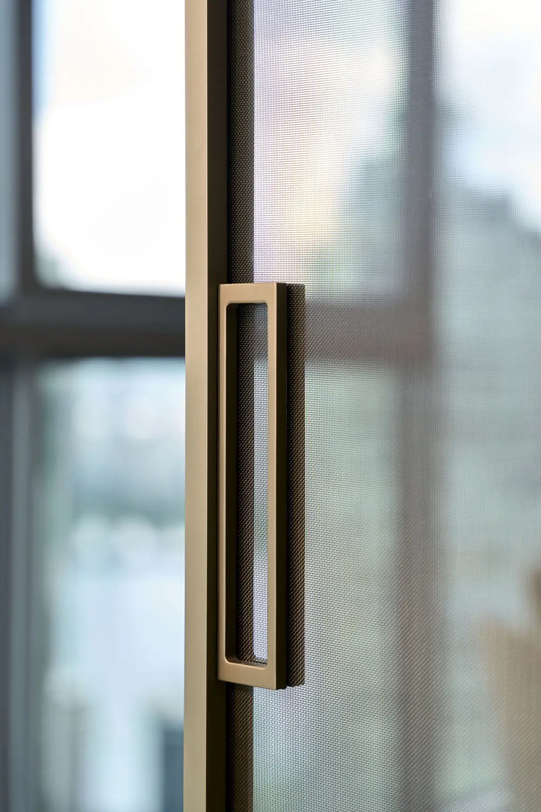
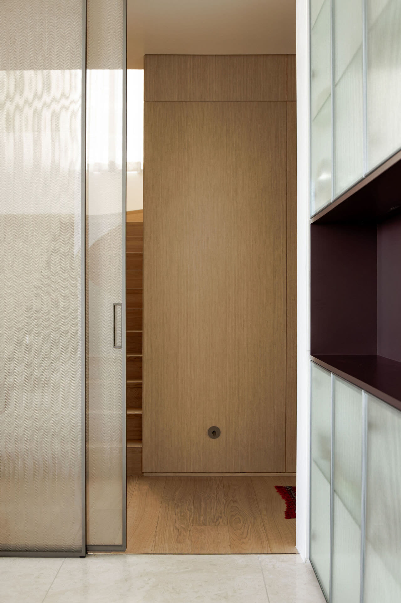
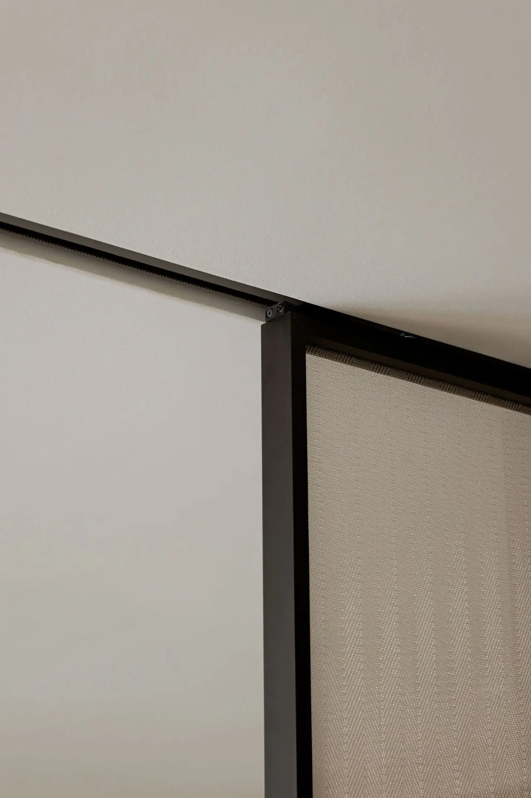
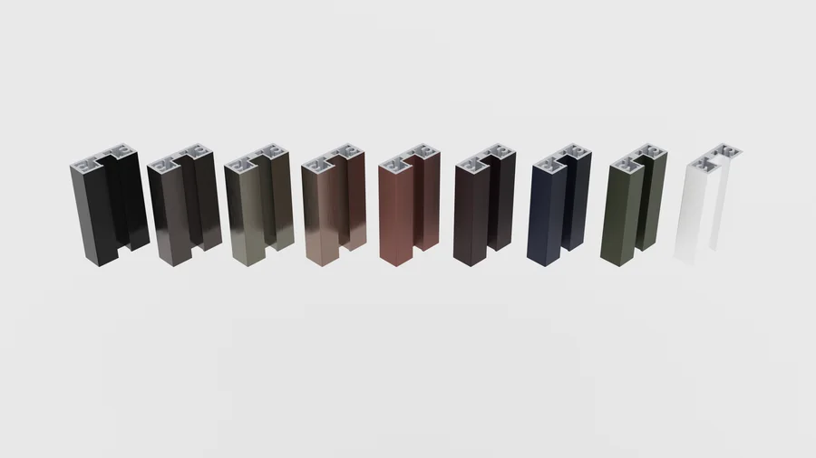
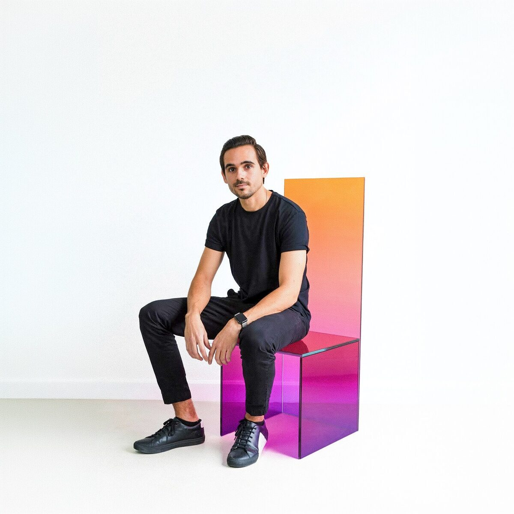

One system. Fifteen ways to open a space.
Pernia Glass is not a catalogue of different doors. It is a single parametric family: one profile, one glass, one mechanism — reconfigured into fifteen systems according to how many panels move and where they disappear to.
The logic behind the whole line. Why one system is enough.
Standardise the component. Vary the composition. It all starts from the same slim profile.
See the systems →The anodised slim profile
A minimal-frame aluminium profile: the structure disappears and the glass takes over. Anodised in 9 finishes — from matte black to gold and cobalt — to blend with the architecture or contrast against it. The same profile is used in all fifteen configurations; what changes is the number of tracks, not the part.


The 8mm laminated glass
Two sheets of glass bonded by an interlayer: safety, acoustic insulation and a constant 8mm thickness across the whole line. The glass comes from Glass Lab — three classified, documented families, from translucent colours to woven inserts and reflectives. The system is the frame; the glass is the expressive decision.
The soft-close mechanism
Each panel runs on a bearing concealed in the header, with a damped brake that brings it to a soft stop at the end of its travel — no slam, no bounce. The header is sized in 2×2, 2×4 or 2×6 steel according to load, hidden behind a gypsum ceiling and, optionally, finished with a 2×1 wood trim.

Four bases. One variable: how many panels move.
A single sliding panel. The essential division — the most compact member, for small openings and utility rooms.
One fixed, one sliding. The classic of the line — the most versatile configuration for bedrooms, bathrooms and offices.
One fixed, two stacking sliders. A wide opening without losing full enclosure — for wide-span partitions.
Four panels, symmetrical or asymmetrical. The most architectural option for wide openings and French-style openings.
From these bases, each system varies by how many panels move and where they go: fixed panels combined with sliding ones, both to the same side inside a wall pocket, or opening to opposite sides. Alongside the sliding versions there are the pivot, swing and cabinet types — fifteen systems in total, all built from the same slim profile.
Explore the fifteen configurations →Any laminated glass from the Glass Lab catalogue
The system is glass-neutral: it takes any 8mm laminate. That is where Glass Lab comes in, the materials laboratory behind Pernia, with three classified and documented families.
Universal specifications
9 anodised finishes

On-site survey of the opening, level checks and definition of configuration, glass and profile finish.
Profile cutting and anodising, glass lamination at Glass Lab and assembly of the soft-close mechanism.
Steel header assembly, track levelling, panel installation and calibration of the damped brake.
Quality control, gypsum ceiling, optional wood trim and final on-site adjustment of the travel.

Guillermo Pernia
Founder & Director · Pernia Glass + Glass Lab“I did not want to manufacture doors. I wanted a system: one well-resolved part that could be composed in endless ways.”
An architect by training, Guillermo created Pernia Glass to solve one concrete frustration: the glass doors on the market were heavy, crude and limited. His answer was a parametric system — a single anodised slim profile, fifteen configurations, one soft-close mechanism — made in Panama to an international standard.
Behind every door is Glass Lab, his materials laboratory: an archive of classified, tested and documented glass that feeds the entire line. He is not interested in glass as an ordinary material, but as an expressive one — with texture, colour and a presence of its own.
Find your configuration
Fifteen systems, nine profile finishes and the entire Glass Lab catalogue. Let's define the exact door for your project together.